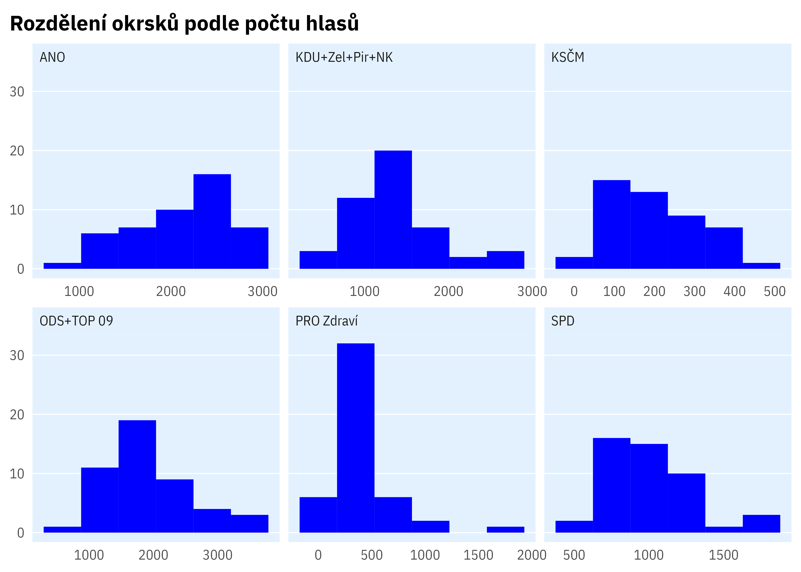
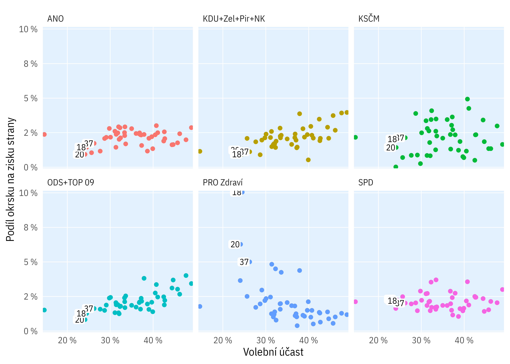

Analýza kupčení s hlasy v Teplicích
Komunální volby 2022


Velké obce srovnání
| ID okrsku | číslo okrsku | Kod obce | Název obce | Strana (zkr.) | percentil | pořadí | Podíl okrsku na straně |
|---|---|---|---|---|---|---|---|
| 480 | 6 | 539911 | Příbram | DSSS | 1 | 1 | 17,7 % |
| 9761 | 15 | 545881 | Jindřichův Hradec | Svobodní+NK | 1 | 2 | 16,0 % |
| 5050 | 11 | 554961 | Karlovy Vary | Trikolora | 1 | 3 | 14,9 % |
| 488 | 14 | 539911 | Příbram | ČSSD+NK | 1 | 4 | 14,4 % |
| 14921 | 5 | 599069 | Orlová | Soukromníci | 1 | 5 | 14,1 % |
| 10379 | 13 | 568414 | Havlíčkův Brod | Piráti+NK | 1 | 6 | 13,4 % |
| 15580 | 43 | 586846 | Jihlava | MZH | 1 | 7 | 13,1 % |
| 475 | 1 | 539911 | Příbram | DSSS | 1 | 8 | 12,9 % |
| 416 | 2 | 511382 | Přerov | ČSSD | 1 | 9 | 12,4 % |
| 5057 | 18 | 554961 | Karlovy Vary | BEZ-UL+PES | 1 | 10 | 12,4 % |
| 9761 | 15 | 545881 | Jindřichův Hradec | KDU-ČSL+NK | 1 | 11 | 12,1 % |
| 9750 | 4 | 545881 | Jindřichův Hradec | KDU-ČSL+NK | 1 | 12 | 11,8 % |
| 14920 | 4 | 599069 | Orlová | Soukromníci | 1 | 13 | 11,7 % |
| 8260 | 30 | 552046 | Tábor | Zelení+NK | 1 | 14 | 11,6 % |
| 1220 | 5 | 561380 | Česká Lípa | Trikolora | 1 | 15 | 11,5 % |
| 9758 | 12 | 545881 | Jindřichův Hradec | ČSSD | 1 | 16 | 11,4 % |
| 478 | 4 | 539911 | Příbram | SNKED+PŘÍSAH+NK | 1 | 17 | 11,0 % |
| 1239 | 24 | 561380 | Česká Lípa | Svobodní | 1 | 18 | 11,0 % |
| 5052 | 13 | 554961 | Karlovy Vary | BEZ-UL+PES | 1 | 19 | 10,8 % |
| 9761 | 15 | 545881 | Jindřichův Hradec | STAN | 1 | 20 | 10,8 % |
| 490 | 16 | 539911 | Příbram | DSSS | 1 | 21 | 10,8 % |
| 15540 | 3 | 586846 | Jihlava | SZZJ | 1 | 22 | 10,5 % |
| 488 | 14 | 539911 | Příbram | KDU-ČSL+NK | 1 | 23 | 10,2 % |
| 1374 | 24 | 562971 | Chomutov | MODES | 1 | 24 | 10,1 % |
| 941 | 18 | 567442 | Teplice | PRO Zdraví | 1 | 25 | 10,1 % |
| 4668 | 9018 | 500216 | NA | SNK | 1 | 26 | 9,9 % |
| 9761 | 15 | 545881 | Jindřichův Hradec | Piráti+NK | 1 | 27 | 9,9 % |
| 489 | 15 | 539911 | Příbram | DSSS | 1 | 28 | 9,9 % |
| 1256 | 41 | 561380 | Česká Lípa | Piráti | 1 | 29 | 9,7 % |
| 9750 | 4 | 545881 | Jindřichův Hradec | SNK ED+NK | 1 | 30 | 9,5 % |
| 14921 | 5 | 599069 | Orlová | BZ | 1 | 31 | 9,5 % |
| 14614 | 22 | 598810 | Třinec | KDU-ČSL | 1 | 32 | 9,5 % |
| 14030 | 5 | 579025 | Trutnov | SproK+NK | 1 | 33 | 9,5 % |
| 482 | 8 | 539911 | Příbram | DSSS | 1 | 34 | 9,5 % |
| 14624 | 32 | 598810 | Třinec | ČSSD+NK | 2 | 35 | 9,5 % |
| 9760 | 14 | 545881 | Jindřichův Hradec | JIH 12+NK | 2 | 36 | 9,5 % |
| 14039 | 14 | 579025 | Trutnov | BPS+NK | 2 | 37 | 9,5 % |
| 9757 | 11 | 545881 | Jindřichův Hradec | KSČM+DOMOV | 2 | 38 | 9,3 % |
| 9762 | 16 | 545881 | Jindřichův Hradec | KDU-ČSL+NK | 2 | 39 | 9,3 % |
| 9763 | 17 | 545881 | Jindřichův Hradec | Patrioti ČR+NK | 2 | 40 | 9,2 % |

Mapy


Histogramy



Scatter ploty


Klíčové okrsky

Simulace
Spatial autocorrelation
Teplice
Všechna města
Rozdělení podobně (ne)úspěšných stran v podobně velkých městech
(Strany s 3–8 % hlasů, ve městech s 30 až 70 okrsky)